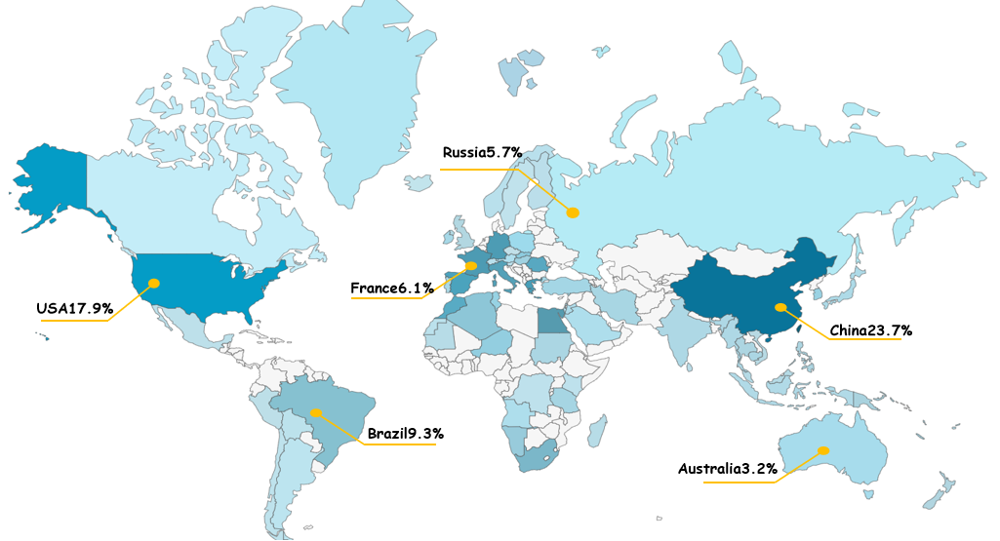
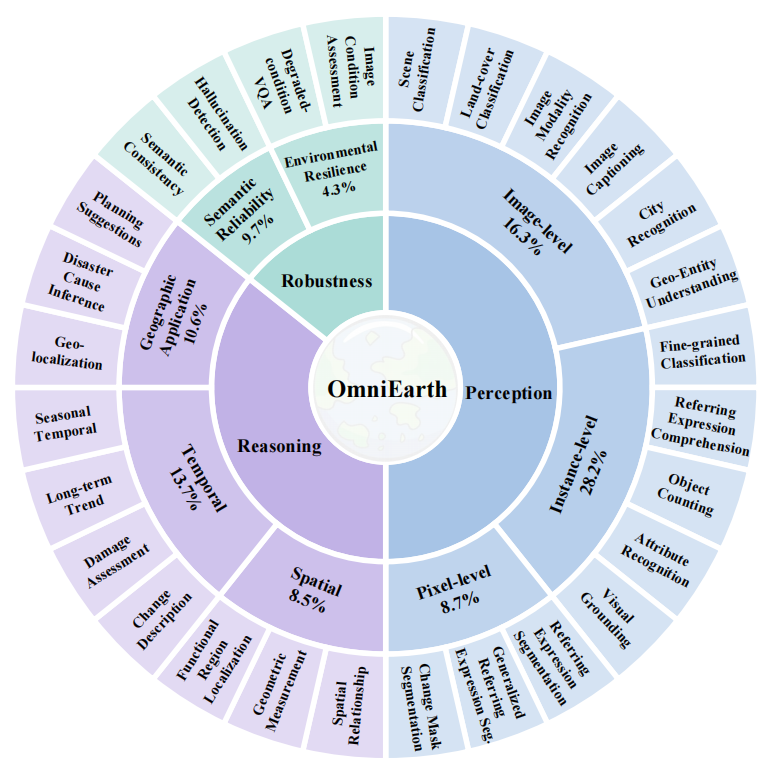
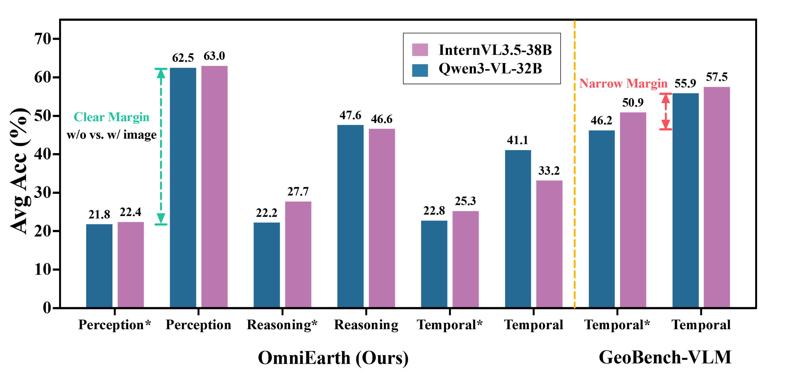
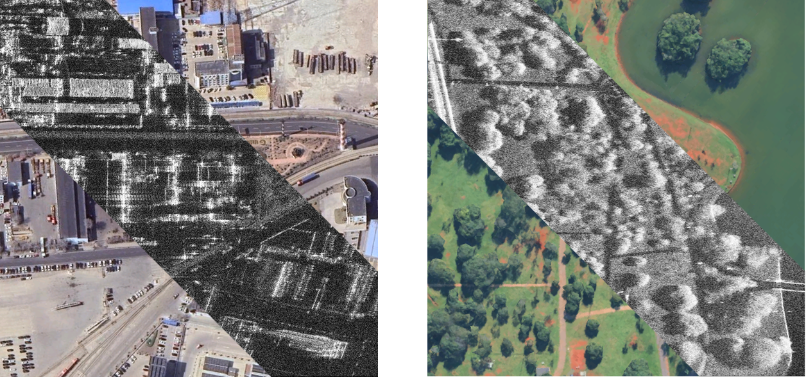

Taxonomy & Global Coverage
OmniEarth adopts a hierarchical taxonomy across three dimensions: Perception, Reasoning, and Robustness. To mitigate geographic bias, we curated high-resolution imagery from over 400 cities globally.





Vision-Language Models (VLMs) have demonstrated effective perception and reasoning capabilities on general-domain tasks, leading to growing interest in their application to Earth observation. However, a systematic benchmark for comprehensively evaluating remote sensing vision-language models (RSVLMs) remains lacking.
To address this gap, we introduce OmniEarth, a benchmark for evaluating RSVLMs under realistic Earth observation scenarios. OmniEarth defines 28 fine-grained tasks covering multi-source sensing data and diverse geospatial contexts. To reduce linguistic bias and examine whether model predictions genuinely rely on visual evidence, OmniEarth adopts a blind test protocol and a quintuple semantic consistency requirement.
OmniEarth includes 9,275 carefully quality-controlled images, including proprietary satellite imagery from Jilin-1 (JL-1), along with 44,210 manually verified instructions. We conduct a systematic evaluation of 19 VLMs. Results show that while modern architectures (e.g., Qwen3-VL) exhibit significant gains in spatial inference, existing models still struggle with geospatially complex tasks, revealing clear gaps for true visual grounding in remote sensing.
OmniEarth adopts a hierarchical taxonomy across three dimensions: Perception, Reasoning, and Robustness. To mitigate geographic bias, we curated high-resolution imagery from over 400 cities globally.

Do models actually look at the remote sensing images? We introduced a blind test protocol to calculate Visual Gain. While some models rely on linguistic shortcuts, architectures like Qwen3-VL show genuine active perception capabilities.
@inproceedings{fu2026omniearth,
author = {Fu, Ronghao and Liu, Haoran and Zhang, Weijie and Lin, Zhiwen and Yang, Xiao and Zhang, Peng and Yang, Bo},
title = {OmniEarth: A Benchmark for Evaluating Vision-Language Models in Geospatial Tasks},
year = {2026},
isbn = {979-8-4007-2259-2/2026/08},
publisher = {Association for Computing Machinery},
doi = {10.1145/3770855.3817467},
booktitle = {Proceedings of the 32nd ACM SIGKDD Conference on Knowledge Discovery and Data Mining V.2}
}